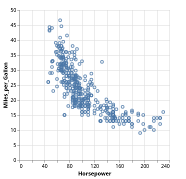
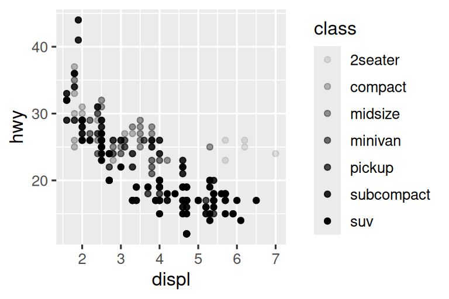
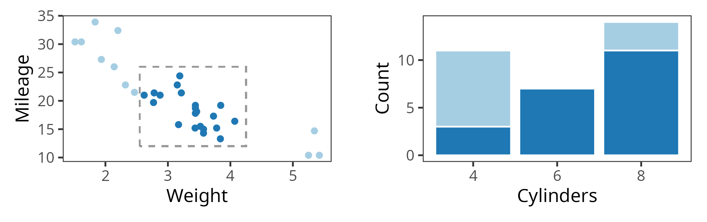

Interactive Data Exploration with Plotscaper
and the Hidden Algebra of Interactive Graphics
The University of Auckland
Live Demo
The Grammar of Graphics



Key properties of GoG
- Algebraic
- Declarative (recipes, not taxonomies)
- Comprehensive (?)
Wilkinson (2012)
- “This system cannot produce a meaningless graphic, however. This is a strong claim, vulnerable to a single counter-example. It is a claim based on the formal rules of the system, however, not on the evaluation of specific graphics it may produce.” (pp. 15)
- “Some of the combinations of graphs and statistical methods may be degenerate or bizarre, but there is no moral reason to restrict them.” (pp. 112)
What makes a plot degenerate?

Stacking is not just a graphical operation…
Stacking: Not only about graphics
“Stacking is useful when the sum of the amounts represented by the individual stacked bars is in itself a meaningful amount.” (Wilke 2019, 52)
“Because this gives the visual impression of one element that is the sum of several others, it is very important that if the element’s size is used to display a statistic, then that statistic must be summable. Stacking bars that represent counts, sums, or percentages are fine, but a stacked bar chart where bars show average values is generally meaningless.” (Wills 2011, 112)
“[…] We do this to ensure that aggregate statistics are always computed over the input data, and so users do not inadvertantly compute e.g., averages of averages, which can easily lead to misinterpretation.” (Wu 2022)
Linked selection
- One of the most useful interactive features1
- Click or click and drag to select objects in one plot, highlight the corresponding cases across all other plots

Displaying linked selection
- One-to-one plots:
- E.g. scatterplots, parallel coordinate plots
- Simple - just draw in corresponding color
- Many-to-one (aggregate) plots:
- E.g. barplots, histograms, bubbleplots, etc…
- More complicated - can highlight parts of objects (stacking/highlighting), dodge, overlay, etc…
Drawbacks of dodging/overlay
- The object sizes are not fixed/bounded
- Axis limits may need to be recomputed upon selection
- Loss of visual context (see Wilhelm 2008; Sievert 2020)
Highlighting parts is convenient…
However, the relationship of parts to the whole must be well-defined…
“Stacking is useful when the sum of the amounts represented by the individual stacked bars is in itself a meaningful amount.” (Wilke 2019, 52)
“Because this gives the visual impression of one element that is the sum of several others, it is very important that if the element’s size is used to display a statistic, then that statistic must be summable. Stacking bars that represent counts, sums, or percentages are fine, but a stacked bar chart where bars show average values is generally meaningless.” (Wills 2011, 112)
“[…] We do this to ensure that aggregate statistics are always computed over the input data, and so users do not inadvertantly compute e.g., averages of averages, which can easily lead to misinterpretation.” (Wu 2022)
Only sums and counts?
Beyond sums and counts
- Other summary statistics preserve part-whole relations
- Known as monoids in category theory/abstract algebra (Fong and Spivak 2019; Lawvere and Schanuel 2009)
- Examples:
- Sums, counts, products, maximums
- Vector norms
- Convex hulls
- String concatenation
Monoids
- A monoid \((X, \otimes, e)\) is a tuple consisting of a set \(X\), a binary operation \(\otimes\), and a neutral element \(e\)
- Such that, for all \(x, y, z \in X\), we have:
- Associativity: \((x \otimes y) \otimes z = x \otimes (y \otimes z) = x \otimes y \otimes z\)
- Unitality: \(x \otimes e = e \otimes x = x\)
- Examples: \[\begin{aligned} 1 + (2 + 3) = (1 + 2) + 3& \qquad x + 0 = 0 + x = x \\ 2 \cdot (3 \cdot 4) = (2 \cdot 3) \cdot 4& \qquad x \cdot 1 = 1 \cdot x = x \end{aligned}\]
Summarizing with monoids
- Suppose \(F\) amounts to summarizing a set \(X\) by repeatedly applying \(\otimes\), \(F(X) = x_1 \otimes x_2 \otimes \ldots \otimes x_n\)
- Now, suppose we summarize \(X\) and \(Y\) and combine: \[\begin{align} F(X) \otimes F(Y) &= (x_1 \otimes x_2 \otimes \ldots \otimes x_n) \otimes (y_1 \otimes y_2 \otimes \ldots \otimes y_n) \\ &= x_1 \otimes x_2 \otimes \ldots \otimes x_n \otimes y_1 \otimes y_2 \otimes \ldots \otimes y_n \\ &= F(X \cup Y) \end{align} \]
Monoids & part-whole relations
- Combined summaries of parts = summary of the whole
- This is useful for (single-group) linked selection:
Monoids and the GoG
- “Some of the combinations of graphs and statistical methods may be degenerate or bizarre, but there is no moral reason to restrict them.” (Wilkinson 2012, 112)
- = plots which do not preserve part-whole relations
- For interactive graphics, there may be reason to restrict/think about plots algebraically
Conclusion
- GoG is a great but has room for refinement
- Tension between modularity and structure
- Things which are independent are easy to work with
- However, graphics and statistics are not independent
- To draw objects composed of parts, we need monoids
- What we can do with a graphic is fundamentally determined by what the graphic is